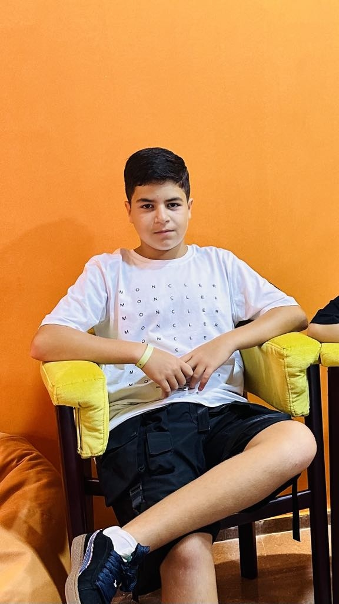

გამარჯობა, მე ვარ გოგა ასათიანი, ვარ 13 წლის ვცხოვრობ ბათუმში, ხოლო ვსწავლობ მეთოთხმეტე საჯარო სკოლაში, ოჯაში ვართ 4 დედმამიშვილი მე(გოგა) ჩემი ძმა(გაგა) დედაჩემი(ზიტა) მამაჩემი(სულხანი). ასევე ვსწავლობ Goal-Oriented-Academy აქ მეგობრული გარემოა ყავთ კარგი მენტორები და რაზმის ლიდერები, რომლებსაც ასევე ჰყავთ მინი ლიდერები. ალბათ გაგიჩნდებათ კითხვა თუ რაში სჭირდება რაზმის ლიდერს მინი ლიდერები? მინი ლიდერები არიან ასევე ამ რაზმის ლიდერის მოსწავლეები, მაგრამ ისინი უფრო მაღალ დონეე არიან ვიდრე ჩვენ როდესაც მოსწავლეს დასჭირდება დახმარება და რაზმის ლიდერი ვერ ახერხებს დახმარებას მაშინ ის მიწერს თავის მინი ლიდერს და მინი ლიდერი დაეხმარება უკვე მას.ასევე თუ გსურთ GOA ში შემოსვლა ან თქვენი შვილის შემოყვანა მიწერეთ ბატონ ნიკა კეშელავას.

კიდევ რაიმე თუ დაგაინტერესებთ დამიკავშირდით Facebookze